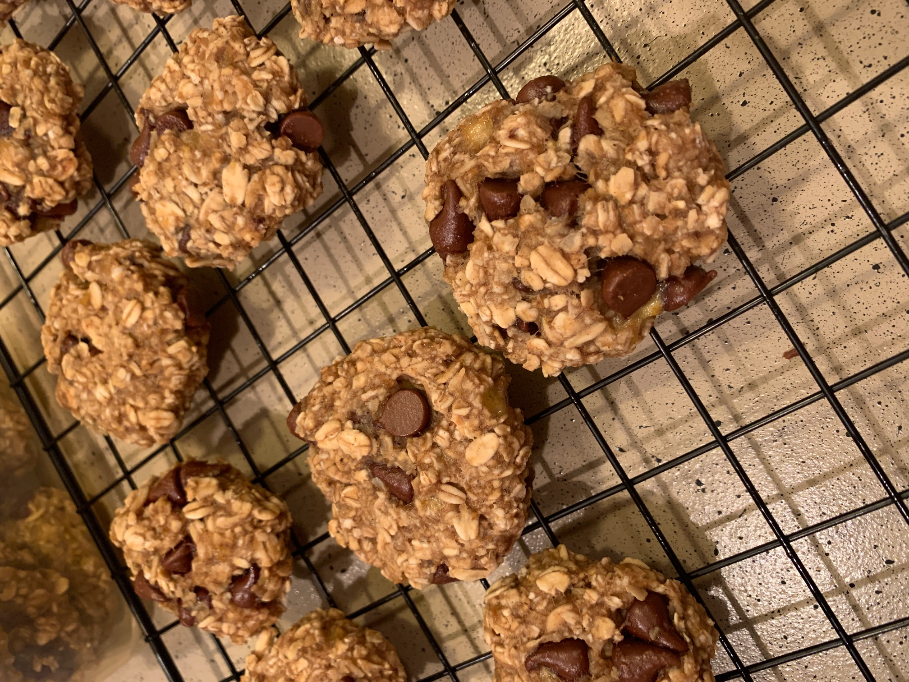
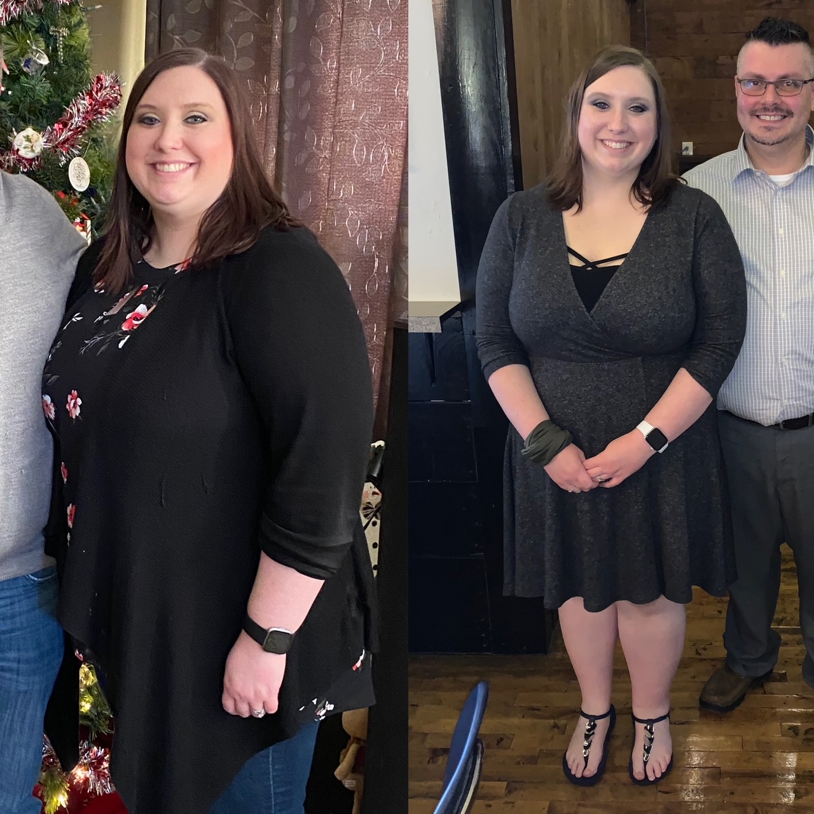

I have been overweight most of my life and struggled with eating healthy.
Just last year around November 2019 I decided it was time to make a change.
I was the heaviest I had ever been and if I wanted to have children I knew I needed to make a change.I wanted to be healthy and and feel better. At my heaviest simple tasks were now difficult and uncomfortable.So I ended up starting to make healthier choices and lost about 10lbs by January 2020.On January 12, 2020 I joined WW (Weight Watchers) and it has been life changing. Since January 2020 I have lost about 75lbs to date and feel so much better! I am not at my goal yet, but I am headed in the right direction.
I'm so proud of myself and how far I have come and I am so very grateful for WW! It has been a wonderful lifestyle change and the WW community is so supportive!
Don't give up on the person you are becoming Unknown
One thing I love about WW is that you can still eat whatever you like just in smaller portions and in moderation. There are a lot of foods that I enjoy eating on a regular basis and recipes I like to cook often that are all healthy and nutritious. I'm always looking for simple easy healthy recipes to make as well! Here is a list of healthy foods I eat on a regular basis.
Cooked in a 6qt Instant Pot Pressure Cooker - 1 point on WW Purple Plan - Makes about 6 servings
Ingredients
1 can Pinto Beans - drained & rinsed
1 can Black Beans - drained & rinsed
1 can Diced Tomatos - not drained
1 can Rotel - not drained
1 cup Chicken broth or water - I usually end up adding more
1 cup Frozen Corn
1 lb 98% Fat Free Ground Chicken Breast (lean ground turkey breast can also be used or traditional lean ground beef)
¼ cup McCormick Taco Seasoning
Instructions
Spray cooking spray in the instant pot. Put 1 lb Ground Chicken into pot put McCormick taco seasoning and mix.
Dump can of diced tomatoes with juice and dump can of rotel with juice. Mix well. Add 1 cup of water possibly more if you receive burn message - see notes below.
Put Instant Pot lid on and set to sealing and manual pressure cook on high pressure for 10 mins. Once its done quick release pressure.
Stir it and then set pressure cooker to sauté mode. This is to help reduce the liquid. Stir occasionally. Once its bubbling add black beans, pinto beans, and corn into the pot and stir. Let sauté until the liquid has reduced some and the beans and corn are warmed.
Once the liquid has reduced you can put Instant Pot back on warm. It will thicken a bit more as it sits too. It's ready to serve! Enjoy
* NOTE - If you receive burn message hit cancel and then carefully open lid and scrap off bits stuck to bottom of pot until all off. Then add a tad more liquid and put lid back on and turn the knob to sealing and set it again. It will not affect the taste and it is not actually burnt.
* Also you can add a chopped onion if you would like to add more flavor to your taco meat. Also great served over rice with all the taco toppings you love!

Banana Chocolate Chip Oatmeal Breakfast Cookies
Makes about 18 servings - 1 point on WW Purple Plan for one - These are so delicious and so easy to make and eat. You can customize it with whatever mix ins you like.
Ingredients
2 Medium Ripe Bananas
1 cup of Quick Oats
½ cup of Old Fashioned Rolled Oats
⅓ cup Mini Chocolate Chips - or variety of choice
1 tsp Cinnamon
1 tsp Vanilla Extract
Instructions
Preheat oven to 350 degrees Fahrenheit
Spray a cookie sheet with cooking spray
Start by mashing up the ripe bananas in a large mixing bowl using a fork
Onced mashed add the quick oats, rolled oats, cinnamon, and vanilla extract. Mix well until a thick batter forms.
Once your batter is mixed add the chocolate chips and gently fold them in until mixed throughout
Scoop out a heaping tablespoon of dough and form into a round disc place on cookie sheet
Cook for 12 - 15 minutes or until cooked through and lightly golden. Once cooled it's ready to serve! Enjoy
Along my journey I have had to adjust my mindset about food. I have had to eat smaller portions and know that I can still be satisfied. I still eat my favorite foods like pizza, ice cream, chips, and various "not so good for you" foods, but on occasion of course. I have to plan ahead for those foods so that I don't go over my points for the day or plan to save up extra points to use. I also have to be a bit more careful now since I have had my gallbladder removed recently. Even eating the not so healthy foods I have still lost weight and made progress.
Progress Photo 2
Tip #2 - Fitness
I have also started a bit of fitness as well to help boost my weightloss journey. I usually walk about a mile everyday. Starting slow and eventually work my way to walking a lot more! Then eventually lifting weights to strengthen and tone my muscles.
Tip #3 - Good Quality Sleep
Getting a good nights rest believe it or not also helps with losing weight. The better quality sleep and amount of sleep you get can help you make better food choices and help you feel more in control of your eating.
Tip #4 - Don't Get Discouraged
Try not to get discouraged or beat yourself up if you have a bad food day. Just pick yourself back up and try again. Everyday is a new day and you have to keep trying and determined. Everyone has off days and that is okay. Be nice to yourself and forgive yourself.

Left - Starting Weight Right - Sep 5th 2020
Tip #5 - Remember Your Why & Motivation
Above is a photo of where I am today on my weightloss journey. I'm not to my goal yet, but everyday I'm making choices for a healthier lifestyle and healthier me. I don't plan to stop till I reach my goal. Seeing these photos often gives me motivation to keep going. How I feel and how my clothes fit now are also motivation too! Don't forget to take progress photos!! It's important to see them and help you see the results of your hard work and dedication.